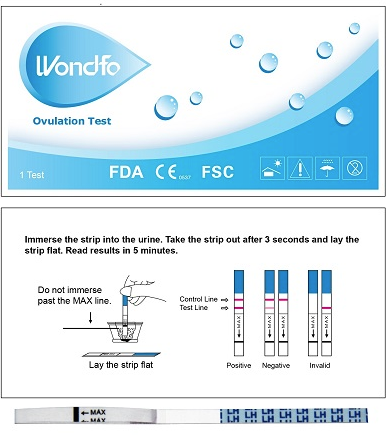

Супер точный тест на овуляцию по доступной цене

- Зачем нужен тест на овуляцию?
- Женщина может забеременить только в течение одного дня в месяце, а, именно, когда у нее происходит овуляция. Так как этот заветный день, зависит от вашего меноструального цикла, то у женщин, с нерегулярным меноструальным циклом, точный день овуляции можно определить только с ипользованием тестов.
- Что такое овуляция?
- Биологический смысл овуляции состоит в освобождении яйцеклетки из фолликула для её оплодотворения и дальнейшей транспортировки по половым путям. Прочитать подробнее об овуляции вы сможите здесь или проконсультировавшись с вашим лечащим врачем.
- Как использовать тест?
- Начинать использовать тест необходимо начиная с 10-ого дня меноструального цикла. Лучше производить тестирование на овуляцию с утра. Опустите белый конец теста в читый одноразовый стракан с мочой до отметки max, как показано выше на рисунке. Подождите 3 секунды и вытащите тест. Затем положите тест на горизонтельную поверхность и ждите 5 минут. Если вы увидете 2 красные, четкие полоски на тесте, то поздравляем у вас овуляция, которая будет продолжаться в течении ближайших 24 часов. Если тест показал одну полоску, то овуляции у вас в этот день нет, продолжайте тестирование в последующие дни, и так до 24-ого дня цикла. Если вы не увидели полоски, попробуйде в это же день, повторить тест. Помните, погружайте тест только до отметки max.
- Цена
- 89 рублей
- Точность
- 99%
- Страна производитель
- США
- Доставка
- Доставка производится в любую точку земного шара.
- Оплата
-

- Вопросы
- Пишите нам